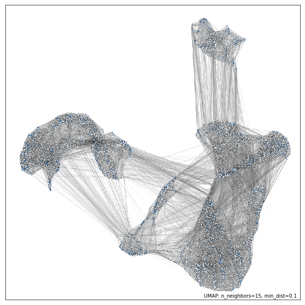
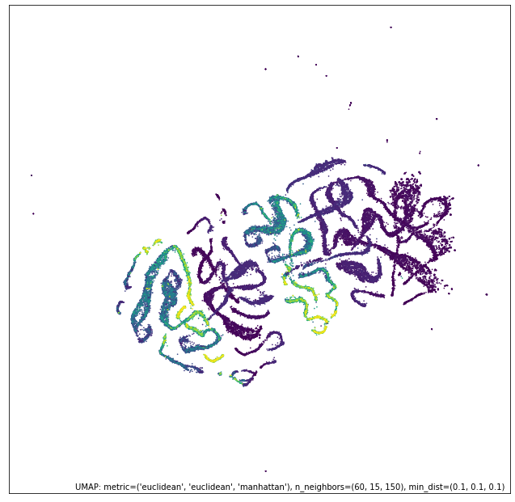

Hi everyone! In this post, I want to say some nice and useful things about embeddings, a topic that shares a rich core between analysis and probability theory. An embedding is a (oftentimes) relatively low-dimensional space into which you can translate high-dimensional data. The use cases for embeddings are also extremely diverse - they range from machine learning on large inputs, to visualization purposes for dimensionality reduction, to simple data analysis. Before I describe these application, I'm going to first develop the theory of embeddings in a similar manner as it was taught to me from Professor Leonard Schulman in Caltech's CS 150 (Probability and Algorithms).
Definition 1 (metric space): A metric space \((M, d_M)\) is a set \(M\) and a function \(d_M : M \times M \to \mathbb{R} \cup \infty\) that is symmetric; \(0\) on the diagonal; and obeys the triangle inequality, \(d_M(x, y) \leq d_M(x, z) + d_M(z, y)\).
Definition 2 (real normed vector space): A real normed vector space is a vector space \(V\) equipped with a nonnegative real-valued "norm" \(\|\cdot\|\) satisfying \(\|cv\| = c\|v\|\) for \(c\geq 0\), \(\|v\|\neq 0\) for \(v\neq 0\), and \(\|v+w\|\leq \|v\| + \|w\|\). Any norm induces a metric by taking the distance between \(v\) and \(w\) to be \(\|v-w\|\). Let \(\mathcal{S} = (S, \mu)\) be any measure space. For \(p\geq 1\), the \(L_p\)-normed space with respect to the measure \(\mu\), denoted as \(L_p(\mathcal{S})\) is defined to be the vector space of functions \(f: S\to \mathbb{R}\) of finite \(L_p\) norm:
$$ \|f\|_p = \left(\int_S |f(x)|^p \mathrm d \mu(x) \right)^{1/p}$$
This framework allows us to discuss the collection of all \(L_2\) (Euclidean) spaces, all \(L_1\) spaces, etc. So, what is an embedding?
Definition 3 (embeddings): An embedding \(f: M\to M'\) is a mapping of a metric space \((M, d_M)\) into another metric space \((M', d_{M'})\). The distortion of the embedding is
$$\sup_{a,b,c,d \in M} \frac{d_{M'}(f(a), f(b))}{d_M(a,b)}\cdot \frac{d_M(c,d)}{d_{M'}(f(c), f(d))}$$
The mapping is called isometric if it has distortion 1.
There are some pretty cool embedding guarantees sprinkled across the field. For instance, any set of \(n\) points in \(L_2(d)\) can be embedded in \(L_2(\min(d, n-1))\) - and these embeddings are so optimal that only few sets of \(n\) points are suboptimal point sets for the embedding. The proof for this theorem is linear algebraic in nature and pretty neat, but I'd like to get into a more robust theorem with meaty applications: the Johnson-Lindenstrauss lemma - more affectionately called the JL lemma.
Theorem 1 (Johnson and Lindenstrauss): Given a set \(A\) of \(n\) points in a Euclidean space \(L_2(d)\), there exists a map \(h: A\to L_2(k)\) with \(k = O(\epsilon^{-2} \log n)\) that is of distortion \(e^\epsilon\) on \(A\). Morever, \(h\) can be linear and can be found with a randomized algorithm in expected time \(\text{poly}(n)\).
So to prove this theorem, we need to actually present a map \(h: A\to L_2(k)\) with \(k = O(\epsilon^{-2} \log n)\) that is of distortion \(e^\epsilon\) on \(A\). Here's the original construction: pick an orthogonal projection, \(\overline{W}\), onto \(\mathbb{R}^k\) uniformly at random, and let \(h(x) = \overline{W}x\) ffor \(x\in A\).
For a more formal way to choose \(\bar{W}\) at random, we need to define the Haar probability measure, which is a measure that assigns a fixed volume to subsets of compact groups. We define it more formally below:
Definition 4 (Haar probability measure): There exists a unique countably additive nontrivial measure \(\mu\) on the Borel subsets of a locally compact group \(G\) satisfying the following properties: left-translation-invariance, finiteness, outer regularity on Borel subsets of \(G\), and inner regularity on open subsets of \(G\). More specifically, left-translation-invariance implies that for every \(g\in G\) and for all Borel sets \(S\subseteq G\), the measure \(\mu\) is left-translation-invariant: \(\mu(gS) = \mu(S)\), where \(gS := \{g\cdot s: s\in S\}\). Finiteness implies that for every compact set \(K\subseteq G\), \(\mu(K)< \infty\). Outer-regularity on Borel subsets \(S\subseteq G\) implies that \(\mu(S) = \inf\{\mu(U): S\subseteq U, U \text{ open}\}\). Inner-regularity on open subsets \(U\subseteq G\) implies that \(\mu(U) = \sup\{\mu(K): K\subseteq U, K \text{ compact}\}\). Any measure satisfying these properties is called a Haar measure. If the measure is such that \(\mu(\Omega)=1\), we call it a Haar probability measure.
So, an equivalent description of picking a projection \(\bar{W}\) at random uses the Haar measure as follows: choose \(\mathcal{U}\) uniformly from \(\mathcal{O}^d\) (the orthogonal group in \(d\) dimensions). More precisely, \(\mathcal{U}\) is chosen from the Haar probability measure, which is invariant under actions of the group. That is to say, for any \(A \in \mathcal{O}^d\) and measurable \(S\subseteq \mathcal{O}^d\), we have that \(\mathrm{Haar}(S) = \mathrm{Haar}(SA) = \mathrm{Haar}(AS)\). For any compact group, including in particular \(\mathcal{O}^d\), such a probability measure exists and is unique.
Then, let \(\tilde{Q}\) be the \(d \times d\) matrix which is a projection map, sending column vectors onto their coordinates in the first \(k\) basis vectors:
$$ \tilde{Q} = \begin{pmatrix}
1 & 0 & 0 & 0 & \ldots & 0 \\
0 & \ddots & 0 & 0 & \ldots & 0 \\
0 & 0 & 1 & 0 & \ldots & 0 \\
0 & 0 & 0 & 0 & \ldots & 0 \\
\vdots & \vdots & \vdots & \vdots & \ddots & 0 \\
0 & 0 & 0 & 0 & \ldots & 0
\end{pmatrix}$$
Then, set \(\tilde{W} = \mathcal{U}^{-1} \tilde{Q} \mathcal{U}\), so a point \(x\in A\) is mapped to \(\mathcal{U}^{-1} \tilde{Q} \mathcal{U} x\).
The final multiplication by \(\mathcal{U}^{−1}\) doesn’t change the length of any vector so it is equivalent to use the mapping \(x\mapsto \tilde{Q} \mathcal{U} x\) and ask what this does to the lengths of vectors between points of \(A\).
Having simplified the mapping in this way, we can now discard the all-0 rows of \(\tilde{Q}\), and use what is left, which we call \(Q\):
$$Q =
\begin{pmatrix}
1 & 0 & 0 & 0 & \ldots & 0 \\
0 & \ddots & 0 & 0 & \ldots & 0 \\
0 & \ldots & 1 & 0 & \ldots & 0
\end{pmatrix}$$
So JL’s final mapping becomes \(\boxed{f(x) = \mathcal{Q}\mathcal{U}x}\).
Moreover, the process described above has the same distribution for all rotations of \(v\). That is to say, for any \(v \in\mathbb{R}^d\), measurable \(S\subseteq \mathbb{R}^d\), and \(A \in \mathcal{O}^d\),
$$ \Pr_\mathcal{U} (\mathcal{Q}\mathcal{U}v \in S) = \Pr_\mathcal{U}(\mathcal{Q}\mathcal{U}Av\in S)$$
This is the same thing as saying that the Haar measure on the group, namely \(\mathcal{O}^d\), is invariant
under action of the group.) So we may as well consider that \(v\) is the vector \(v = e_1 = (1, 0, 0, . . . , 0)^T\). In that case, \(\|\mathcal{Q}\mathcal{U}v\|\) equals \(\|(\mathcal{Q}\mathcal{U})_*\|_1\) where \((\mathcal{Q}\mathcal{U})_{∗1}\) is the first column of \(\mathcal{Q}\mathcal{U}\). But \((\mathcal{Q}\mathcal{U})_{∗1} = (\mathcal{U}_{1,1}, \mathcal{U}_{2,1}, \dots, \mathcal{U}_{k,1})^T\), i.e., the top \(k\) entries of the first column of \(\mathcal{U}\). Since \(\mathcal{U}\) is a random orthogonal matrix, the distribution of its first column (or indeed of any other single column) is simply that of a random unit vector in \(\mathbb{R}^d\). So the whole question boils down to showing concentration for the length of the projection of a random unit vector onto the subspace spanned by the first \(k\) standard basis vectors.
This is a rather complicated set-up to analyze, so let's (somewhat start fresh and) simplify everything.
Here's an easier version of the Johnson-Lindenstrauss embedding - pick \(k\) vectors \(w_1, \dots, w_k \in \mathbb{R}^d\) independently from the spherically symmetric Gaussian density distribution with standard deviation 1.
$$\mathcal{\eta}_{\overrightarrow{1}}(x) = (2\pi)^{-d/2} \exp\left(-\frac{1}{2}\sum_{i=1}^d x_i^2\right) = (2\pi)^{-d/2} \exp\left(-\frac{1}{2}\|x\|^2\right)$$
Note here that the distribution \(\mathcal{\eta}_{\overrightarrow{1}}\) is invariant under the orthogonal group \(\mathcal{O}^d\), the projection of this density on any line through the origin is the 1D Guassian with standard deviation \(1\), so the density \(\mathcal{\eta}(x) = (2\pi)^{-\frac{1}{2}}\exp(-x^/2)\), and the coordinates \(x_1, x_2, \dots\) are independent random variables.
Next, in this setting, we can define the matrix \(W\) by setting its rows to be the vectors \(w_i\), so:
$$W =
\begin{pmatrix}
\ldots & \ldots & w_1 & \ldots & \ldots \\
\ldots & \ldots & w_2 & \ldots & \ldots \\
\vdots & \vdots & \vdots & \vdots & \vdots \\
\ldots & \ldots & w_k & \ldots & \ldots
\end{pmatrix}$$
Then, for \(v\in\mathbb{R}^d\), set \(h(v) = Wv\). So, note that our projection of any unit vector in the original space, has the distribution of a vector whose coordinates \(w_{i1}, \dots, w_{ik}\) are independently and identically distributed with \(E(w^2_{i1})=1\). So, \(\mathbb{E}(\sum w_{i1}^2) = k\). Our goal is to obtain a deviation bound on \(\sum_{i} w^2_{i1}\) from its expectation so that we can find the distortion for the embedding.
To compute this, set random variables \(y_i = w_{i1}^2 - 1\) such that \(\EE[y_i] = 0\). With this change of variables we now want a bound on the deviation from \(0\) of the random variable \(\bar{y} = \frac{1}{k}\sum_{i=1}^k y_i\). To get a Chernoff bound, we need the moment generating function \(\gamma(\beta)\) for \(y_i\) to be:
$$ \begin{align*}
\gamma(\beta) &= \EE[e^{\beta y}] = \EE[e^{\beta(w^2 - 1)}] \\
&= e^{-\beta}\int_{-\infty}^\infty \frac{1}{\sqrt{2\pi}} e^{w^2 (\beta - 1/2)}\mathrm dw \\
&= \frac{e^{-\beta}}{\sqrt{1-2\beta}}\int_{-\infty}^\infty \frac{\sqrt{1-2\beta}}{\sqrt{2\pi}}e^{-\frac{1}{2}w^2(1-2\beta)}\mathrm dw \\
&= \frac{e^{-\beta}}{\sqrt{1-2\beta}}
\end{align*}$$
The last equality follows as the integrand is the density of a normal random variable with standard deviation \(\frac{1}{\sqrt{1-2\beta}}\). Thus, \(\gamma(\beta)\) is well defined and differentiable in \((-\infty, \frac{1}{2})\). After some calculus, we find that the optimal \(\beta\) for the Chernoff bound is at \(\beta = \frac{\epsilon}{2(1+\epsilon)}\). This gives in turn \(\kappa^*(\epsilon) = -\log((1+\epsilon)^{1/2}e^{-\epsilon/2})\)
and so
$$ \Pr(\bar{y}/\epsilon > 1) < ((1 + \epsilon)^{1/2}e^{-\epsilon/2})^k$$
Now we apply this bound to the modified JL construction. We can ensure a distortion of \(e^\delta\) (with
positive probability) by showing that for each of our \({n\choose 2}\) vectors \(v\), with probability \(> 1 - 1/{n\choose 2}\), that
$$ \|v\|e^{-\delta/2} \leq \frac{1}{\sqrt{k}} \|W v\| \leq \|v\| e^{\delta/2}$$
We have already argued by the invariance of our construction under the orthogonal group, that for any \(v\), this has the same probbaility as the event:
$$ e^{-\delta/2} \leq \sqrt{\frac{1}{k} \sum w_{i1}^2 } \leq e^{\delta/2}$$
$$ e^{-\delta} \leq \frac{1}{k} \sum w_{i1}^2 \leq e^\delta$$
$$ e^{-\delta} - 1 \leq \bar{y} \leq e^{\delta} - 1$$
Applying the Chernoff bound once gives us:
$$ \Pr(\bar{y} > e^\delta - 1) < e^{k(\delta/2) - (e^\delta - 1)/2} = e^{(k/2)(1+\delta-e^\delta)} < e^{-k\delta^2/4}$$
Applying the Chernoff bound again gives us:
$$ \Pr(\bar{y} < e^{-\delta} - 1) < e^{k(-\delta/2 - (e^-\delta - 1)/2)} = e^{(k/2)(1-\delta-e^{-\delta})} < e^{-k(\delta^2/4 + O(\delta^3))}$$
In all, taking \(k = 8(1 + O(\delta))\delta^{-2} \log n\) suffices so that \(\Pr(\frac{1}{k} \sum w_{i1}^2 \notin [e^{-\delta}, e^\delta]) < 1/n^2\) and therefore the mapping has probability at most \(1/2\) of having distortion more than \(e^\delta\).
There are also a number of deterministic poly-time algorithms that can produce an embedding up to the standards of the Johnson-Lindenstrauss theorem, like the Engebretsen embeddings, Indyk and O’Donnell's embedding, and Sivakumar's embedding.
So, the JL lemma allows us to embed a "rigid" \(L_2\) metric in a reduced dimension. It is also possible to extend this to embedding relatively "loose" metric spaces in a rigid object like a vector space with an \(L_p\) norm, with only a slight worsening of the distortion. To do this, we examine Bourgain's embedding theorems.
Theorem 2 (Bourgain's embedding): Any metric \((X, d)\) with \(n=|X|\) can be embedded in \(L_p(O(\log^2 n)), p\geq 1\) with distortion \(O(\log^2 n)\). There is a randomized polytime algorithm to find such an embedding.
The basic tool for Bourgain's embedding is the Fréchet embeddings. Since the domain of our mapping is merely a metric space rather than a normed space, we cannot apply anything like the JL technique, and something quite different is called for. Bourgain’s proof employs a type of embedding introduced much earlier by Fréchet. The one-dimensional Fréchet embedding imposed by a set \(\emptyset \subset T \subseteq X\) is the mapping
$$ \tau: X\to \mathbb{R}_+$$
$$ \tau(x) = d(x, T) = \min_{t\in T} d(x, t)$$
Observe that by the triangle inequality for \(d\), \(|\tau(x) − \tau(y)| \leq d(x, y)\). So \(\tau\) is a contraction of \(X\) into the metric on the real line. We'll first prove the theoorem for the \(p = 1\) case. The main idea is that we can combine several such \(T_i\)’s in separate coordinates. If we label the respective mappings \(\tau_i\) and give each a nonnegative weight \(w_i\), with the weights summing to \(1\), then:
$$ \tau(x) = (w_1\tau_1(x), \dots, w_k\tau_k(x))$$
then we can consider the composite mapping \(\tau\) as an embedding into \(L_1(k)\) and it too is contractive, namely,
$$ \|\tau(x) - \tau(y)\|_1 \leq d(x, y)$$
So the key part of the proof is the lower bound.
Let \(s = \lceil \log n\rceil\). For \(1\leq t\leq s\) and \(1\leq j\leq s' \in \Theta(s)\), choose set \(T_{tj}\) by selecting each point of \(X\) independently with probability \(2^{−t−1}\). Let all the weights be uniform, i.e., \(1/ss'\). This defines an embedding \(\tau = (\dots, \tau_{tj}, \dots)/ss'\) of the desired dimension. (If any \(T_{tj}\) is empty, let \(\tau_{tj}\) map all \(x ∈ X\) to \(0\).)
We need to show that with positive probability
$$ \forall x, y, \in X: \|\tau(x) − \tau(y)\|_1 \geq \Omega(d(x, y)/s) $$
Just as in JL, in the proof we focus on a single pair \(x \neq y\) and show that with probability greater
than \(1 − 1/n^2\) (enabling a union bound) it is embedded with the desired distortion \(O(s)\). So, for this, we write for open and closed balls:
$$B_r(x) = \{z : d(x, z) \leq r\}$$
$$\bar{B}_r(x) = \{z : d(x, z) \leq r\}$$
Recall that we are now analyzing the embedding for any fixed pair of points \(x \neq y\). Let \(\rho_0 = 0\). For \(t > 0\) define
$$
\begin{align*}
\rho_t &= \sup\{r: |B_r(x)| < 2^r \text{ or } |B_r(y)| < 2^t\} \\
&= \inf\{r: |B_r(x)|\geq 2^t \text{ and } |B_r(y)| \geq 2^t\}
\end{align*}
$$
up to \(\hat{t} = \max\{t : \rho_t < d(x, y)/2\}\). So \(\hat{t}\geq 0\) (and it is possible to have \(\hat{t} = 0\), for instance if no other points are near \(x\) and \(y\)). Observe that for the closed balls we have that for all \(t\leq \hat{t}\),
$$|\bar{B}_{\rho_t}(x)| \geq 2^t \text{ and } |\bar{B}_{\rho_t}(y)| \geq 2^t$$
We see that \(\hat{t} < s\) because of the radius cap at \(d(x, y)/2\), which implies that \(y\) is excluded from these
balls around \(x\) and vice versa. Set \(\rho_{\hat{t}+1} = d(x, y)/2\), which means that it still holds for \(t = \hat{t} + 1\) that \(|B_{\rho_t} (x)| < 2^t\) or \(|B_{\rho_t} (y)| < 2^t\), although \(\rho_{\hat{t}+1}\) may not be the largest radius for which this holds.
Also, \(\rho_{\hat{t}+1} > \rho_{\hat{t}}\) (because \(\hat{t}\) was defined so that \(\rho_{\hat{t}} < d(x, y)/2\). But for \(t \leq \hat{t}\) it is possible to have \(\rho_t = \rho_{t−1}\).
In the embedding we use the sets \(T_{tj}\) for \(0 \leq t \leq \hat{t} + 1\). Any contribution from higher-t (smaller
expected cardinality) sets is “bonus.” So we have an overall of \(\hat{t}+1\) scales.
Lemma 1: Fix any \(1 \leq t \leq \hat{t} + 1\). With probability \(c > 0\), \(|\tau_{t1}(x) − \tau_{t1}(y)| > \rho_t − \rho_{t−1}\).
To prove this, suppose (without loss of generality) that
$$|B_{\rho_t}(x) < 2^t$$
Therefore, since \(|\bar{B}_{\rho_t - 1}(y)| \geq 2^{t-1}\), we have that:
$$|\bar{B}_{\rho_t - 1}(y)| > |B_{\rho_t}(x)| / 2$$
Now observe that a sufficient condition for
$$ |\tau_{t1}(x) − \tau_{t1}(y)| > \rho_t - \rho_{t-1} $$
is that the following two events both hold:
$$ T_{t1} \cap B_{\rho_t} = \emptyset $$
$$ T_{t_1} \cap \bar{B}_{\rho_{t-1}} \neq \emptyset $$
We claim that this conjunction happens with probability bounded away from \(0\). To prove this, we introduce the following lemma:
Lemma 2:. Suppose \(A \subseteq [m], m > 0, |A| \geq am, B = [m] \setminus A\). Let \(0 < b \leq 1\) and let \(R_i\) be pairwise independent binary random variables for \(i = 1, \dots, m\), with \(\Pr(R_i = 1) = b/m\). Let \(R = \{i : R_i = 1\}\). Then, for all \(a> 0\), there exists a continuous function \(c_a\) positive on \((0, 1]\) such that for all \(m\), \(\Pr((A \cap R \neq \emptyset) \wedge (B \cap R = \emptyset)) \geq c_a(b)\). Specifically, this holds for \(c_a(b) = ab(1 − b + ab/2)\).
Now we apply this by setting the correspondence \([m] = \bar{B}_{\rho_{t-1}}(y) \cup B_{\rho_t}(x), A = \bar{B}_{\rho_{t-1}}(y)\) so that \(a\geq 1/3\). By definition the sampling probability is \(2^{-t-1}\) so \(b\) in Lemma 2 is applied with \(b/m = 2^{−t−1}\), thus \(1/4 \leq b < 3/4\). So, we have established the hypotheses of Lemma 2, and Lemma 1 follows by setting \(c = \min_{b\in [1/4,3/4]} c_{1/3}(b)\).
Now, let \(G_{x,y,t}\) be the “good” event that at least \(c/2\) of the coordinates at level \(t\), namely \(\{\tau_{tj}\}_{j=1}^{s'}\) have
$$|\tau_{tj}(x) − \tau_{tj}(y)| > \rho_t − \rho_{t−1}$$
If the good event occurs for all \(t\), then for all \(x, y\),
$$\|\tau(x) - \tau(y)\|_1 \geq \frac{1}{s} \frac{c}{2} \frac{d(x, y)}{2}$$
Here the first factor is from the normalization, the second from the definition of good events, and the third from the cap on the \(\rho_t\)'s. We can upper bound the probability that a good event \(G_{x,y,t}\) fails to happen using Chernoff:
$$ \boxed{\Pr(G^c_{x, y, t}) \leq e^{-\Omega(s')}}$$
Lemma 3: Let \(F_1, \dots, F_{s'}\) be independent Bernoulli random variables, each with expectation \(\geq \mu\). Then \(\Pr(\sum F_i < (1-\epsilon)\mu s')\leq e^{-\epsilon^2 \mu s'/2}\).
This permits us (plugging in \(\epsilon = 1/2, \mu = c)\) to take \(s' = \frac{8}{c} \log(2n^2 \log n) \in \Theta(\log n)\). Now, taking a union bound over all \(x, y, t\), we get:
$$ \Pr\left(\bigcup_{x,y,t} G_t^c\right) \leq e^{-\frac{1}{4}cs'/2} n^2 \log n \leq \frac{1}{2}$$
Bourgain's embedding theorem for \(L_1\) is quite intuitive, but the generalized proof for \(L_p\) embeddings happens to be more concise. It relies on a neat probabilistic argument with the power-means inequality and a powerful demonstration of the extent of the applicability of Fréchet embeddings. I present the proof for this below. However, before we start, we prove the following lemma that was stated without proof for the Bourgain \(L_1\) embedding theorem, which will now be essential for the \(L_p\) embedding theorems:
Lemma: Suppose \(A \subseteq [m], m > 0, |A| \geq cm, B = [m]\setminus A\). Let \(0 < b \leq 1\) and let \(R_i\) be pairwise
independent binary random variables for \(i = 1, \dots, n\), with \(\Pr(R_i = 1) = b/m\). Let \(R = \{i : R_i = 1\}\). Then, for all \(c > 0\), there exists \(d > 0\) such that for all m, \(\Pr((A \cap R \neq \emptyset) \wedge (B \cap R = \emptyset)) \geq d\).
To prove this, let \(I_J = \bigcup_{i\in J} R_i\), where \(I_J\) is defined for any set \(J\subseteq [n]\). Then, note that \(I_A \neq \emptyset \iff R\cap A\neq \emptyset\). Similarly, \(I_B \neq \emptyset \iff R\cap B\neq\emptyset\). By extension, \(1-I_B = 1\iff R\cap B = \emptyset\). Then, we have that:
$$\begin{align*}
\Pr[(R\cap B = \emptyset) \wedge (R\cap A \neq \emptyset)] &= \Pr[I_A (1 - I_B) = 1] \\
&= \Pr[I_A - I_A \cap I_B = 1]\\
&= \Pr[I_A = 1] - \Pr[I_A \cap I_B = 1]
\end{align*}
$$
To justify the last line, note that \(I_A \cap I_B \subseteq I_A\). So, \(\Pr[I_A \setminus (I_A \cap I_B)=1] = \Pr[I_A \cap \overline{I_A \cap I_B}=1] = \Pr[I_A=1] - \Pr[I_A \cap I_B=1]\) (since the probability function is a measure and so it must be closed under the set-minus operation). Then, our goal is to find an upper-bound \(d\) for \(\Pr[I_A=1] - \Pr[I_A \cap I_B= 1]\). By the M2 bound:
$$\begin{align*}
\Pr[I_A = 1] = \Pr\bigg[\bigcup_{i\in A} R_i = 1\bigg] &\geq \sum_{i\in A}\Pr[R_i=1] - \sum_{i,j\in A}\Pr[R_i R_j = 1] \\
&= |A|\frac{b}{m} - {|A|\choose 2} \frac{b^2}{m^2} \\
&\geq \frac{|A|b}{m} - \frac{|A|^2 b^2}{2m^2}
\end{align*}$$
Next, we similarly have that:
$$\begin{align*}
\Pr[I_A \cap I_B = 1] &= \Pr\bigg[\bigcup_{a\in A, b\in B}R_a R_b = 1\bigg] = \sum_{a\in A}\sum_{b\in B} \Pr[R_a R_b = 1] \\
&= \sum_{a\in A}\sum_{b\in B} \Pr[R_a = 1]\Pr[R_b = 1] \quad \text{(by the independence of $R_i$)}\\
&= |A| |B| \frac{b^2}{m^2}
\end{align*}
$$
So, we write that:
$$\begin{align*}
\Pr[I_A = 1] - \Pr[I_A \cap I_B = 1] &\geq \frac{|A|b}{m} - \frac{|A|^2 b^2}{2m^2} - \frac{|A||B|b^2}{m^2} \\
&= \frac{|A|b}{m} - \frac{|A|^2 b^2}{2m^2} - \frac{|A|(m - |A|)b^2}{m^2} \\
&\leq \frac{cmb}{m} - \frac{c^2 m^2 b^2}{2m^2} - \frac{cm(m - cm)b^2}{m^2} \\
&= bc - b^2 c + b^2 c^2 /2 \\
&= bc(1-b) + b^2 c^2 / 2
\end{align*}$$
Clearly, the above term is positive. Therefore, we have shown that \(\forall c>0, \exists d = bc(1-b) +b^2 c^2/2 > 0\) such that \(\forall m>0\),
$$\boxed{\Pr[(A\cap R \neq \emptyset) \wedge (B\cap R =\emptyset)] \geq d}$$
We now extend Bourgain's embedding theorem in \(L_1\) using Fréchet Embeddings to an embedding theorem in \(L_p\) using the same Fréchet embeddings, with a distortion of \(O(\log n)\). For this, consider the Fréchet embedding imposed by a set \(\emptyset \subseteq \tau \subseteq X\) by the mapping $$\tau: X\to\mathbb{R}_+$$ where $$\tau(x) = d(x, t) = \min_{t\in T} d(x,t)$$ We show that the Fréchet embedding allows us to embed any metric embedding with distortion \(O(\log n)\) into \(\ell_p\). Firstly, we can combine several such \(\tau_i\)'s in different coordinates. If we label the respective mappings \(\tau_i\) and give each a non-negative weight \(w_i\) summing to \(1\), then the weights form a probability distribution. Consider the following composite mapping $$\tau(x) = (\omega_1 \tau_1(x), \cdots, \omega_k \tau_k(x))$$
We note that \(\ell_p\) is still a metric space since it is positive and symmetric, the distance to itself is \(0\), and it satisfies the triangle inequality since
$$\|\tau(x) - \tau(y)\|_p \leq \|\tau(x) - \tau(z)\|_p + \|\tau(z) - \tau(y)\|_p$$
by the triangle inequality for all normed spaces. So, \(\ell_p\) is still a metric space.
Then, from Bourgain's proof for \(\ell_1\) embedding, we are given the following contraction and distortion bounds:
$$\frac{\|\tau(x)-\tau(y)\|_1}{d(x, y)} \leq 1, \quad\quad\quad \frac{d(x,y)}{\|\tau(x)-\tau(y)\|_1} \in O(\log n)$$
First, we can write that:
$$\begin{align*}
\left(\sum_{i=1}^k \omega_i^p |\tau_i(x) - \tau_i(y)|^p\right)^{1/p} \leq \left(\sum_{i=1}^k \omega_i^p d(x, y)^p\right)^{1/p} \leq |d(x, y)| \cdot \|\omega\|_p
\end{align*}
$$
Since \(\omega = [1/k, \cdots 1/k]^\mathrm T\), we know that \(\|\omega\|_p = (k\cdot (1/k)^p)^{1/p} = k^{1/p - 1}\). Therefore, we have that:
$$\begin{align*}
\frac{\|\tau(x) - \tau(y)\|_p}{d(x, y)} \leq k^{1/p-1}
\end{align*}$$
Then, the powers-means-inequality yields that:
$$\begin{align*}
\left(\frac{1}{k}\sum_{i=1}^k \omega_i^p \cdot |\tau_i(x) - \tau_i(y)|^p\right)^{\frac{1}{p}} &\geq \frac{1}{k}\sum_{i=1}^k \omega_i \cdot |\tau_i(x) - \tau_i(y)| \\
\implies \left(\sum_{i=1}^k \omega_i^p |\tau_i(x) - \tau_i(y)|^p\right)^\frac{1}{p} &\geq k^{\frac{1}{p} - 1} \sum_{i=1}^k \omega_i|\tau_i(x) - \tau_i(y)| \\
&\implies \frac{\|\tau(x) - \tau(y)\|_p}{\|\tau(x) - \tau(y)\|_1} \geq k^{\frac{1}{p}-1}
\end{align*}$$
Then, recall from the Bourgain proof that:
$$\begin{align*}
\frac{d(x, y)}{\|\tau(x) - \tau(y)\|_1} &\leq c \log n \implies \frac{d(x, y)}{c \log n \|\tau(x) - \tau(y)\|_p} \leq \frac{\|\tau(x) - \tau(y)\|_1}{\|\tau(x) - \tau(y)\|_p} \leq k^{1- 1/p}
\end{align*}$$
Therefore, we must have that:
$$\frac{d(x,y)}{\|\tau(x)-\tau(y)\|_p} \leq c\cdot \log n \cdot k^{1-\frac{1}{p}}$$
Then, the distortion of the metric under this embedding is characterized by:
$$\boxed{\sup_{a,b,c,d\in X} \frac{d(a, b)}{\|\tau(a) - \tau(b)\|_p} \cdot \frac{\|\tau(d)-\tau(c)\|_p}{d(c,d)} \leq c \cdot \log n \cdot k^{1-1/p} \cdot k^{1/p-1} = c\log n}$$
Therefore, the distortion of the metric space when embedding into \(\ell_p\) for \(p\geq 1\) is still \(O(\log n)\).
So I've now shown this pretty formal way of handling embeddings. Let's look at a few examples now! My favorite examples on the topic of embeddings are typically t-SNE (t-stochastic neighbor embedding) and UMAP (uniform manifold approximation and projection): I'll say something about each of them over the next few sections and even show some simulation results of the embeddings -- they often tend to look very visually appealing, so these techniques are used with flair quite often in the data visualization industry, and these particular embeddings are given the general umbrella term, 'dimensionality reduction'.
T-SNE (t-distributed stochastic neighbor embedding) is a dimensionality reduction embedding technique that is used to visualize high-dimensional data in a lower dimensional space, such as \(\mathbb{R}^s\) for \(s\in\{1,2,3\}\), such that \(\text{t-SNE: }\chi=(x_1, ..., x_N) \rightarrow Y=(y_1, ..., y_N)\) for \(x_i \in \mathbb{R}^d\) and \(y_i \in \mathbb{R}^s\), where \(d\) and \(s\) are the dimensionalities of the dataset and the embedding (respectively). For each pair of points \(x_i, x_j \in \chi\) such that for \(i\neq j\), t-SNE computes a conditional probability distribution \(p_{ij}\) based on their similarity in the dataset:
$$\begin{equation}
p_{j|i} = \dfrac{\exp(-\|x_i - x_j\|^2/(2 \sigma_i^2)}{\sum_{k\neq i} \exp(-\|x_i - x_k\|^2/(2 \sigma_i^2))} \Rightarrow p_{ij} = \frac{p_{i|j}+p_{j|i}}{2N}
\end{equation}$$
where \(p_{ii}=0\) for \(i\in[N]\). Each point \(x_i\in \chi\) then has a natural characterization with the Gaussian probability density function, where the mean is centered at \(x_i\). Using this probability distribution, t-SNE seeks to learn \(y_1, ..., y_N \in \mathbb{R}^s\). Specifically, t-SNE computes a conditional probability distribution \(q_{ij}\), which measures the similarity for each pair of points |(y_i, y_j\) such that \(i\neq j\):
$$\begin{equation}
q_{ij} = \dfrac{(1 + \|y_i - y_j\|^2)^{-1}}{\sum\limits_k \sum\limits_{l\neq k} (1 + \|y_k - y_l\|^2)^{-1}}
\end{equation}$$
where \(q_{ii}=0\) for \(i\in[N]\). The t-SNE algorithm learns \(y_1, ..., y_N\in \mathbb{R}^s\) using a gradient-descent algorithm to minimize the Kullback-Leibler (KL) divergence (which is the relative entropy) between the distributions of \(p_{ij}\) and \(q_{ij}\), defined by:
$$\begin{equation}
\mathrm{KL}(P \| Q) = \sum\limits_{i\neq j} p_{ij} \log \frac{p_{ij}}{q_{ij}}
\end{equation}$$
When the t-SNE algorithm is used to embed a high-dimensional dataset onto \(\mathbb{R}^s\), points that are more similar in \(\chi\) get mapped closer to each other in \(Y\), tending to forming clusters, whereas points that are more dissimilar are mapped further away from each other, as is observed in Figure 1. A significant amount of progress has been made in quantifying the uncertainty of classification models. For instance, several deep learning algorithms commonly use Bayesian techniques to effectively model the uncertainty of their predictions, using Bayesian Neural Networks, Monte Carlo Dropouts, and Markov Chain Monte Carlo (MCMC) methods.
To understand UMAP, we need to talk about locally connected Riemannian manifolds which I'm going to define right now:
Definition (locally connected): Let \(X\) be a topological space and let \(x\) be a point of \(X\). Then, the space \(X\) is said to be locally connected at \(x\) if every neighborhood of \(x\) contains a connected open neighborhood of \(x\)m that is, if the point \(x\) has the neighborhood base consisting of connected open sets. A locally connected space is a space that is locally connected at each of its points.
Definition (Riemannian manifold): The Riemannian manifold \((M, g)\) is a real, smoot manifold \(M\) equipped with a positive-definite inner product \(g_p\) on the tangent space \(T_p M\) at each point \(p\). The family \(g_p\) of inner products is called a Riemannian metric. A common convention is to take \(g\) to be smooth, which means that for any smooth coordinate chart \((U, x)\) on \(M\), the \(n^2\) functions
$$ g\left(\frac{\partial}{\partial x^i}, \frac{\partial}{\partial x^j}\right): U\to\mathbb{R}$$
are smooth functions. These functions are commoonly designated as \(g_{ij}\). The corresponding Riemann tensor is a metric tensor can be written in terms of the dual basis \(\{dx^1, \dots, dx^n\) of the cotangent bundle as
$$ g = \sum_{i,j} g_{ij} \mathrm dx^i \otimes \mathrm dx^j$$
The nice feature of these properties is that they allow a host of nice visualizations on the dimensionality reduction of any arbitrary dataset.


As promised, the uniform manifold approximation and projection does yield some pretty nice visualizations of said high-dimensional data. Their utility again emerges from the metric invariance property, which, when stated qualitatively is: "similar points are embedded towards each other, further points are embedded away from each other." You can now see why they are so useful for data analysts: these methods create data clusters that lead to unexpected connections between various components of the data, which leads to new (and oftentimes, profitable) discoveries!
Now that we've described t-SNE and UMAP, these incredibly popular tools in machine learning, let's analyze their behaviors, the full extent of their accuracy, and their generalizability for scientific research under the lens of the Johnson Lindenstrauss lemma for embeddings and distortions.
The overall Johnson-Lindenstrauss lemma for embeddings concerns the low-distortion embeddings of points from high-dimensional spaces into a low-dimensional Euclidean space, when the map is (as established earlier), atleast Lipschitz and an orthogonal projection. Specifically, it state that there exists a set of points of size \(m\) that needs dimension
$$ \Omega\left(\frac{\log m}{\epsilon^2}\right)$$
to preserve the distances between all pairs of points within a factor of \((1\pm \epsilon)\). Specifically, the distortion function \(f\) acts with:
$$ (1+\epsilon)^{-1}\|f(u) - f(v)\|^2 \leq \|u - v\|^2 \leq (1-\epsilon)^{-1}\|f(u) - f(v)\|^2$$
where the restriction \(f|_X\) is \((1+\epsilon)\)-bi-Lipschitz. It is also possible to combine \(2\) JL matrices by taking the face-splitting product, which is defined as the tensor product of its rows. Specifically, let \(A, B \in \mathbb{R}^{3\times 3}\). Then, the face-splitting product \(A\bullet B\) is defined as:
$$ A\bullet B = \begin{bmatrix}
A_1 \otimes B_1 \\
\hline
A_2 \otimes B_2 \\
\hline
A_3 \otimes B_3
\end{bmatrix}
$$
These combined matrices can also be applied to vectors with some kind of random structure due to the following lemma:
$$ (A\bullet B)(x\otimes y) = Ax \circ By = \begin{bmatrix}
(A x)_1 (B y)_1 \\
(A x)_2 (B y)_2 \\
(A x)_3 (B y)_3
\end{bmatrix}$$
To recap the earlier section, Johnson Lindenstrauss' Lemma proves the existence of a set of points of size \(m\) needing dimension (for some constant \(c\)):
$$ p = \Omega\left(\frac{\log m}{\epsilon^2}\right) \geq \frac{c\log m}{\epsilon^2}$$
Some quick algebra then yields:
$$ \boxed{\epsilon \geq \sqrt{\frac{c \log m}{p}}}$$
The above equation tells us how the distortion of a dataset depends on the embedding dimension. For the sake of exploration, let's see how the distortion of a dataset varies with the dimension using differentation with respect to \(p\). So, since the above functions are strictly decreasing (with respect to \(p\), the situational anti-monotonicity of the derivative is:
$$\begin{align*}
\frac{\mathrm d\epsilon}{\mathrm dp} \leq \frac{\mathrm d}{\mathrm dp} \sqrt{\frac{c \log m}{p}} = -\frac{1}{2}\frac{c_1 \sqrt{\log m}}{p^{3/2}}
\end{align*}$$
Therefore, we have that:
$$\begin{align*}
\left\|\frac{\mathrm d\epsilon}{\mathrm dp}\right\| \leq \frac{1}{2}\left\|\frac{c_1 \sqrt{\log m}}{p^{3/2}}\right\| = O(1/p^{3/2})
\end{align*}$$
So, we see that the rate at which the distortion decreases (as a function of the number of embedding dimensions) is \(O(1/p^{3/2})\). This is a nice result because if you have the capacity to quantify your distortion, you can find out how marginally close you are to the ideal low-distortion dimensionality reduction embedding, and the same result holds for t-SNE and UMAP. So, in conclusion,
$$\begin{align*}
\boxed{\left\|\frac{\mathrm d\epsilon}{\mathrm dp}\right\| \leq O(1/p^{3/2})}
\end{align*}$$
Anyways, that's all I have to say about embeddings. I think there is still a lot of scope for development for low-distortion embeddings, but I'm particularly fascinated with how the analysis of embeddings relies on analysis, geometry, probability, and linear algebra - the union of these different topics in mathematics is very exciting, and they lead to new fields. I'm excited to see how that plays out for embeddings.